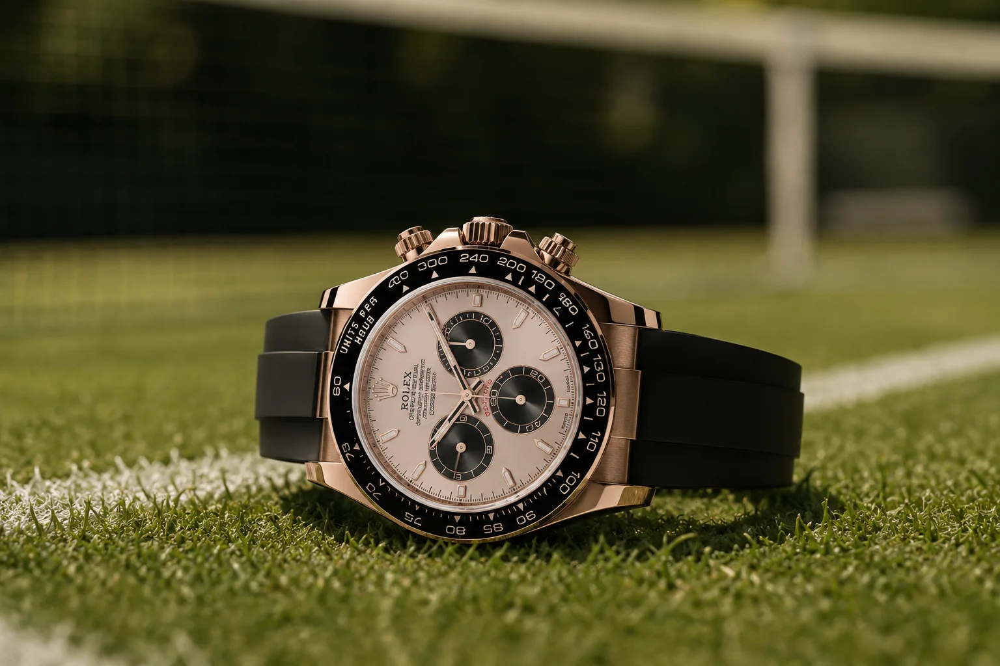
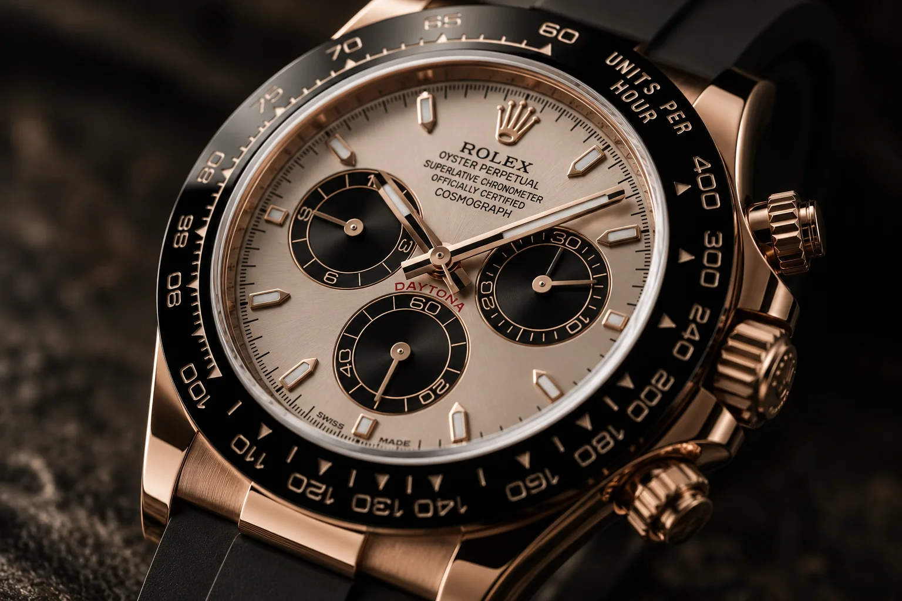

On Sunday 12 July, Jannik Sinner beat Alexander Zverev to keep the Wimbledon title he won a year earlier. Then he did the thing the watch world actually noticed: he reached for the same Rolex he wore the last time.
The final was a grind — 6-7(7), 7-6(2), 6-3, 6-4 across three hours and 46 minutes, Zverev taking the opener in a tiebreak before Sinner turned it. It was his fifth Grand Slam, and it made him the tenth man to successfully defend the Wimbledon men's singles title.
But the wrist is the part that will outlive the scoreline in collector circles. Sinner does not play in a watch. He puts one on for the trophy — and for the second Wimbledon running, it was a Rolex Cosmograph Daytona, reference 126515LN, in Everose gold. The same watch. Twice. That repetition is not a detail; it is, historically, how a Daytona gets a name.
Wimbledon 2026 · The Champion's Watch
Jannik Sinner
Rolex Cosmograph Daytona — ref. 126515LN · 18k Everose gold · black Cerachrom bezel · Sundust dial · black Oysterflex · 40mm
≈ $44,800 retail
A Rolex testimonee since 2020, Sinner wears the least shouty way there is to wear a gold Daytona. And unlike almost every celebrity watch we write about, this one is not a jewellery-department one-off, not a discontinued grail and not out of reach by design — it is in the current catalogue. Which makes the retail figure the least useful number attached to it, and the secondary price the only one that matters.
Seen on his Instagram · @janniksin →Price verified · 16 July 2026 — Rolex list price, cross-checked across multiple watch-press reports. Secondary-market pricing moves weekly; check Fair Value before you buy.
How a Daytona Earns Its Name
Rolex has never named a Daytona after a person. Not once. The Paul Newman is not a Rolex product — it is a nickname collectors attached, decades later, to a specific exotic-dial reference because Newman happened to wear one. The John Mayer is a green-dial gold Daytona that got its name because Mayer talked about it, on camera and credibly, until the market simply started calling it that. Carlos Alcaraz's Daytona is travelling the same road right now.
That is the mechanism. A nickname Daytona is not manufactured in Geneva; it is earned, slowly, by association — one person, one reference, repeated often enough and publicly enough that the reference stops being a number and starts being a story. Rolex's silence is part of it. The company never confirms, never leans in, never puts a name on a dial. Collectors do the naming. The market does the pricing.
Which is why the second Wimbledon mattered more than the first. One trophy photograph is a spotting. Two, in the same reference, is a pattern — and a pattern is what the watch press starts writing about. It already has: within days of the final, outlets were asking whether Sinner had accidentally created Rolex's next famous Daytona.
Rolex never names a Daytona after anyone. Collectors do — and only when the same watch turns up on the same wrist at the same moment, twice.
The Stories To Watch verdictThe Watch — Reference 126515LN
Strip the story away and it is a very good watch on its own terms. The 126515LN is the Everose Daytona: a 40mm case in Rolex's own rose-gold alloy — blended in-house with platinum so the pink never fades — beneath a black Cerachrom monobloc bezel. Sinner's carries the Sundust dial, a warm champagne-bronze that reads gold in one light and grey in another, on the black Oysterflex, Rolex's rubber-over-titanium strap.
It is a deliberately quiet way to own a gold chronograph. No diamonds, no exotic dial, nothing that announces itself from across a room — which is precisely why it works on a man who lets the tennis do the announcing.

The Part Most Spottings Skip: You Can Actually Chase This One
Here is where this parts company with almost every celebrity watch story. Ronaldo's diamond Patek has no honest alternative. Drake's Richard Mille is not a shopping list. But the 126515LN is current production, from the most liquid brand on earth, and it sits squarely inside our dealer network.
The catch is the catch on every Daytona: you will not buy it at an authorised dealer. Not because it is discontinued — it isn't — but because allocation, not availability, decides who gets one. So the $44,800 list price is academic. The real question is what the secondary market is asking, and whether that number is fair or simply Sinner-inflated.
That is exactly the question Fair Value exists to answer. The association is days old, the demand curve is moving, and asking prices in a hot week are the worst possible guide to what a watch is actually worth. Find the honest number first. Then find the watch.
Rolex
Cosmograph Daytona — ref. 126515LN, Everose gold, 40mm
In the current catalogue, impossible at retail, and now carrying a champion's association that is actively lifting asking prices. Price it before you chase it — the gap between the ask and the honest number is the whole game.
The Honest Takeaway
Nicknames are not marketing. They are memory. The Paul Newman took decades. The John Mayer took a personality. "The Sinner" — if it sticks — will have taken two trophies and one very consistent man who kept reaching for the same watch.
It may not stick; most don't. But the reference underneath the speculation is a genuinely great Daytona that you can price, chase and actually own — which is more than can be said for most watches that make headlines. Enjoy the story. Then do the useful part.
Frequently Asked
What watch does Jannik Sinner wear?
A Rolex Cosmograph Daytona, reference 126515LN — 40mm, 18k Everose gold, black Cerachrom bezel, Sundust dial, black Oysterflex bracelet. He has been a Rolex testimonee since 2020. He does not wear it during play; it goes on for the trophy presentation and post-match interviews, which is when it has been photographed at Wimbledon.
How much is Jannik Sinner's Rolex Daytona?
It lists at roughly $44,800. That figure is largely academic — like every Daytona, it is effectively unbuyable at an authorised dealer, so the real cost is the secondary-market price, which sits well above list. Sinner's second Wimbledon is pushing asks higher still, which is why it is worth checking a fair value before paying one.
Is the Rolex Daytona 126515LN discontinued?
No — it is still in Rolex's current catalogue. Its scarcity comes from allocation, not discontinuation: Rolex makes them, but authorised dealers rarely have one to sell. That is what separates it from most nickname Daytonas, such as the Paul Newman, which are collectable precisely because they are long out of production.
Why are collectors calling it "the Sinner"?
Because he wore the same reference to celebrate both his 2025 and 2026 Wimbledon titles, and that repetition is how Daytona nicknames have always formed. Rolex does not create them; collectors do, over time. "The Sinner" is emerging speculation rather than an established name — but the mechanism behind it is real, and it has produced every famous Daytona we have.
Sources: match result, score and record confirmed against ATP Tour and ESPN match reports. Watch reference, specification and list price cross-checked across multiple watch-press reports. Nickname speculation is reported as speculation, not fact. Photography our own. Prices are indicative, not quotes — see how we price.
The Two-Step
Price the Daytona with Fair Value, then find it in the Watch Finder
Retail vs. real market · Authorised dealers · Grey market · Auction houses